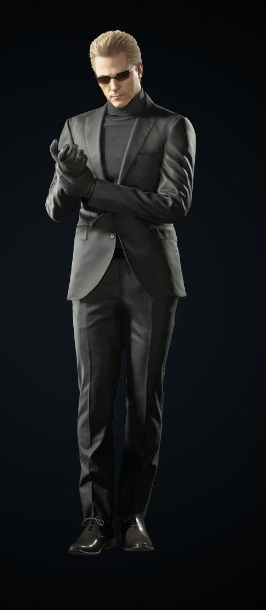
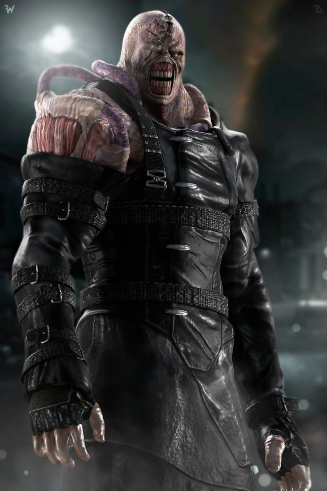
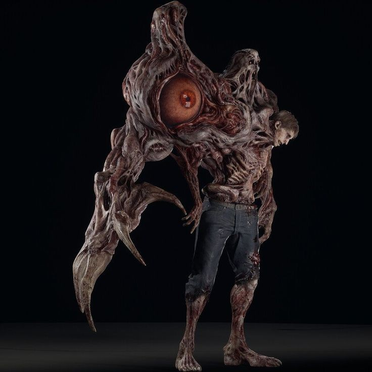
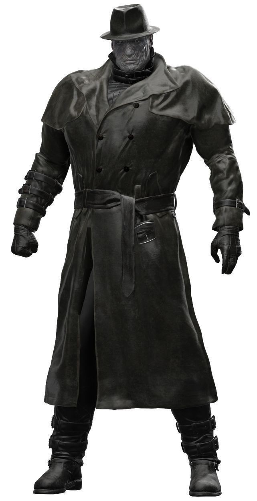

El verdadero protagonista de Resident Evil no puede ser otro más que Chris Redfield.
Este ex miembro de los S.T.A.R.S fue el primer personaje jugable junto a Jill Valentine en Resident Evil de 1996 y es el protagonista
que más ha aparecido en los principales títulos de la saga. En total, ha tenido 14 apariciones en los juegos de la saga, películas,
libros y cómics. Chris ha crecido con muchos de nosotros desde hace más 25 años y en Resident Evil 8, el último juego numerado que ha salido,
podemos disfrutar nuevamente de su plenitud como personaje (Díez, 2021).
Juegos de Resident Evil en donde apareció Chris Redfield
Juegos
Año de lanzamiento
Resident Evil
1996
Resident Evil: Code Veronica
1998
Resident Evil Remake
2002
Resident Evil 5
2009
Resident Evil: Revelations
2012
Resident Evil 6
2012
Resident Evil 7: Biohazard
2017
Resident Evil Village (8)
2021
Curiosidades del personaje
La mayoría de la historia está relacionada con él directa o indirectamente.
Chris salva Jill de los cerberus al inicio de Resident Evil, él también es la razón por la cual Claire va a Raccoon City, lo que lo hace un personaje clave en la historia ya que sin él la historia no sería la misma.
Es el primer personaje jugable de toda la saga.
Posee una chaqueta que dice "Made in Heaven", Claire también lleva una en Resident Evil 2.
Es el personaje que más ha aparecido en juegos de Resident Evil así como también en los Crossovers y mangas entre otras cosas.
Tuvo un cambio físico, esto se debió a que este tuvo una gran desventaja contra Wesker en pelea de la Isla Rockfort. Luego de jurar acabar con Umbrella, Chris se dedicó a ejercitarse para su próximo encuentro con Wesker.
En Resident Evil 6, su compañero es un hombre, pero en los demás Resident Evil en los que ha aparecido, su compañero siempre ha sido una chica.
Al inicio se creyó que Chris iba a ser un antagonista en Resident Evil Village ya que en los trailers podemos ver como aparentemente asesina a Mia Winters a sangre fría y secuestra a Rose y Ethan, esto termino siendo erróneo ya que tras la salida del juego, podemos ver como en realidad, intentaba asesinar a Madre Miranda quien había cambiado de apariencia a la de Mia y se lleva a Ethan y Rose para protegerlos ya que está consciente de los planes de Miranda de tomar a Rose como anfitriona de Eva y usar a Ethan para esa ceremonia.
Fue entrenado personalmente por Wesker en los S.T.A.R.S. por esa razón Wesker lo considera uno de los mejores miembros.
Chris posee la habilidad y conocimiento para manejar vehículos militares, así como también vehículos aéreos.
Se unió a los S.T.A.R.S. por recomendación de su amigo Barry Burton a el cual le pediría unos años después que se uniese a la B.S.A.A.
Leon S. Kennedy tiene un vínculo con Chris a través de Claire, se han visto la cara solo dos veces.
Posee una gran habilidad y destreza usando el cuchillo, así como una puntería excepcional la cual lo ha llevado a ganar competencias.
La historia de Chris comienza en Juilo de 1998, dos meses antes del brote de Raccoon City.
Es el mejor y más destacado miembro de S.T.A.R.S. por su experiencia, conocimiento, y habilidades.
Chris ha aumentado tanto su fuerza y potencial físico que puede golpear rocas rodantes enormes a base de varios puñetazos, entre otras hazañas, siendo catalogado como un Destructor de Muros.
Es el máximo enemigo de Wesker y de Umbrella.
En Resident Evil Revelations Jessica Sherawat siente algo por Chris, lanzando muchas indirectas a este, las cuales él ignora, a lo que Parker Luciani comenta "Puede que ya este ocupado, Jessica" refiriéndose a Chris y Jill.
Como también podemos ver en todos los Resident Evil, Chris siente algo por Jill Valentine y viceversa.
Posee una "Samurai Edge Custom", arma oficial de los S.T.A.R.S.
(Resident Evil Wiki, s.f.)
1.2. Jill Valentine
Jill Valentine es sin lugar a dudas uno de los personajes más populares de la saga. Algo que la propia Capcom ha llegado a confirmar.
Miembro de los S.T.A.R.S., Jill contó con una campaña propia en Resident Evil y repitió en solitario en Resident Evil 3: Némesis. El hecho de ser el
primer personaje de la saga en contar con un juego propio y sus interesantes dinámicas y encuentros con Nemesis, hicieron de Jill Valentine un
icono en los videojuegos. En total, Jill ha tenido 13 apariciones en la franquicia (Díez, 2021).
Juegos de Resident Evil en donde apareció Jill Valentine
Juegos
Año de lanzamiento
Resident Evil
1996
Resident Evil 3: Némesis
1999
Resident Evil Remake
2002
Resident Evil 5
2009
Resident Evil: Revelations
2012
Resident Evil 3 Remake
2020
Curiosidades del personaje
En Resident Evil 3: Nemesis es la protagonista absoluta.
Su color de pelo cambia radicalmente en Resident Evil 5, pasando de castaño a rubio (debido a los experimentos a los que fue sometida por Albert Wesker).
En varias entregas en las que aparece Jill, también aparece Chris Redfield, excepto en Resident Evil 3: Nemesis, Resident Evil CODE: Veronica y Resident Evil 6.
Se insinúa que Jill siente algo más por Chris y viceversa, por la forma en la que ambos se protegen.
En Resident Evil 5, en el segundo encuentro donde ella está sola, le puedes arrojar huevos dorados al dispositivo de control mental, le hará efecto tal igual como una bala solo que no la dañará.
En la escena de Resident Evil en la que Jill está a punto de ser aplastada por el techo, Barry Burton le dice que casi se hace "Un sándwich de Jill".
En Resident Evil: Director's Cut, Barry le da un apodo a Jill cuando le da la ganzúa: "the Master of Unlocking" (pudiendo traducirse como "la Reina del Desbloqueo").
El personaje de Jill es naturalmente morocha, pero la actriz que hace su papel en la introducción del juego Resident Evil aparentemente es rubia. Sin embargo, durante el juego, ella está representada como una mujer de pelo oscuro.
Su apriencia fisica en Resident Evil 3 remake es similar a la actriz Milla Jovovich interprete de Alice Abernathy en la francia cinematográfica.
Jill aparentemente es dueña de un perro raza "Cobrador Dorado", puesto que, podemos ver una foto de dicho perro sobre su escritorio en el juego Resident Evil 2 (remake) y en su apartamento en Resident Evil 3 (remake).
En Resident Evil: Revelations 2, Barry logra destruir una gran puerta impactándola con unos troncos por medio del uso de una grúa, tras esto él dice: "Ha! Who's the master of unlocking now, huh?" (pudiendo traducirse como "¡Ha! ¿Quién es el maestro del desbloqueo ahora, huh?", una referencia al primer juego de Resident Evil.
De los personajes de la Franquicia Resident Evil, Jill es la que ha aparecido en más crossovers.
(Resident Evil Wiki, s.f.)
1.3. Leon S. Kennedy
Leon S. Kennedy es considerado, por muchos, el protagonista más facherito de Resident Evil. Lo conocimos como policía novato en Resident Evil 2 y, desde entonces,
formó parte de la historia de esta saga. Aquella historia que se consolidó aún más cuando protagonizó en solitario Resident Evil 4,
juego que se llevó el premio a Juego del Año en 2004. Recientemente pudimos volver a disfrutar de Leon en Resident Evil 2: Remake (2019) y en 2021 protagonizó,
junto a Claire Redfield, Resident Evil: Oscuridad Infinita. Así que está claro que Capcom no quiere desaprovechar a uno de los personajes más queridos por los fans
para sus futuros proyectos (Díez, 2021).
Juegos de Resident Evil en donde apareció Leon S. Kennedy
Juegos
Año de lanzamiento
Resident Evil 2
1998
Resident Evil 4
2004
Resident Evil 6
2012
Resident Evil 2 Remake
2019
Resident Evil 4 Remake
2024
Curiosidades del personaje
Tiene un gran parecido con Dante del videojuego Devil May Cry debido a que Dante fue creado a partir de este personaje de Resident Evil 3.5.
Contrario a que muchos piensan que Leon es una persona seria y seca, hay veces que dice chistes sarcásticos, como en Resident Evil 4 cuando Luis Sera le pregunta si tiene un cigarrillo y él le responde: «tengo un chicle».
Leon ha logrado sobrevivir en multitud de ocasiones gracias a la ayuda de Ada Wong en momentos puntuales.
Leon y Billy Coen son los únicos protagonistas de la saga que no se relacionaron directamente con Wesker, aunque Leon sabe de él a través de medios indirectos.
Se ha vuelto excelente con el cuchillo, tanto como Krauser, como se vio en su pelea contra él.
Se convirtió en el tutor temporal de Sherry antes de dejarla bajo la custodia del gobierno debido a que Claire estaba demasiado ocupada y en situaciones comprometedoras buscando a su hermano después de que huyesen los tres de Raccoon City y no pudiera ocuparse de ella.
Leon trabajó con Jack Krauser en uno de los muchos y diversos organismos secretos gubernamentales. Eran amigos antes de que el segundo fingiera su muerte.
Leon es uno de los pocos personajes que posee un arma personalizada de Kendo: su Silver Ghost utilizada en Resident Evil 4 y en Resident Evil: Degeneration.
Leon, en casi todos los juegos o películas, ha tenido que encargarse de niñas.
El creador de la saga declaró que Leon con el tiempo se volvió su personaje favorito.
El beso que le dio a Ada ha sido el único que se han dado en toda la saga de Resident Evil (RE2).
En Resident Evil 4, si Leon tiene puesto el traje especial 2, tiene cierto parecido con las vestimentas originales de traje del cantautor estadounidense Michael Jackson.
(Resident Evil Wiki, s.f.)
1.4. Claire Redfield
Claire Redfield hizo acto de aparición en Resident Evil 2 (1998), donde se nos presentó como una estudiante que acudía a la caótica y zombificada Raccoon City
en busca de su hermano Chris. Posteriormente, Claire protagonizó el juego de culto por excelencia de la saga y del que muchos fans no dejan de
pedir remake hasta ahora (2024): Resident Evil Code: Veronica. De los cuatro grandes protagonistas de la saga, Claire ha sido la menor explotada
por Capcom en cuanto a apariciones. Sin embargo, la pudimos ver de vuelta en la serie Resident Evil: Oscuridad Infinita (Díez, 2021).
Juegos de Resident Evil en donde apareció Claire Redfield
Juegos
Año de lanzamiento
Resident Evil 2
1998
Resident Evil: Code Veronica
1998
Resident Evil: Revelations 2
2015
Resident Evil 2 Remake
2019
Curiosidades del personaje
En el juego Resident Evil 1.5, el prototipo de Resident Evil 2, no se tenía planeada la aparición de Claire Redfield, sino de Elza Walker, un personaje similar a Claire.
En Resident Evil 1.5, en la perrera de la comisaría hay una perrita llamada Claire, ya que en una jaula aparece dicho nombre.
Claire llegó a Raccoon City en una Harley-Davidson.
En Resident Evil: Degeneration, Claire lleva los mismos zapatos de Leon de Resident Evil 4, pero de otro color.
Claire y Leon siguieron en contacto durante el movimiento para acabar definitivamente con Umbrella.
De los protagonistas frecuentes de la saga, es la única que no recibió entrenamiento militar.
A pesar de no aparecer en Resident Evil 6, es mencionada en más de una ocasión en el juego por Sherry.
En Revelations 2, se demuestra que Piers conoció a Claire en algún punto.
En Resident Evil: Revelations 2, Claire demuestra mucha atracción e importancia hacia Neil por lo que se cree que tuvieron algo más allá de lo laboral.
Hasta el momento, ella es la protagonista que menos apariciones en los videojuegos ha hecho.
Los emblemas de sus chaquetas en Resident Evil 2 y Resident Evil Code: Veronica son en honor a las canciones del grupo Queen ("Made in Heaven" y "Let me Live").
A Claire y Jill Valentine no se les ha visto juntas a lo largo de la saga, aunque un archivo en Resident Evil 2 (remake) sugiere que se conocen de cierta forma por medio de Chris.
(Resident Evil Wiki, s.f.)
1.5. Ethan Winters
Uno de los protagonistas más recientes de la saga, teniendo su primera aparición en Resident Evil 7: Biohazard, es Ethan Winters.
Además de la antes mencionada entrega, también protagonizó Resident Evil 8: Village, dos entregas que han supuesto un giro radical en la saga,
apostando por una perspectiva en primera persona y un gameplay más enfocado al terror que a la acción. En sí, Ethan es un hombre corriente que
se adentra accidentalmente en una pesadilla al buscar a su esposa Mia, la cual fue dada por desaparecida hace tres años.
Para conseguir respuestas, debe enfrentarse a enemigos como la familia Baker y una secta llamada Madre Miranda (Venegas, 2023)
Juegos de Resident Evil en donde apareció Ethan Winters
Juegos
Año de lanzamiento
Resident Evil 7
2007
Resident Evil 8: Village
2021
Curiosidades del personaje
Es el primer protagonista al que no se le ve completamente el rostro.
Es el único protagonista al cual le cortan ambas manos y se la vuelven a unir (una con grapas y la otra con medicamento). En otra escena también le pueden cortar y volver a unir la pierna, aunque esto es opcional.
Es el primer protagonista inédito de una entrega numérica desde Leon y Claire en Resident Evil 2, ya que la historia gira en torno a él y su esposa Mia Winters.
Han aparecidos varias imágenes sobre el verdadero rostro de Ethan, pero todas son fan-art y ninguna ha sido revelada oficialmente por Capcom.
Ethan es el protagonista en la saga Resident Evil menos carismático y que es más cerrado en sus emociones.
Han aparecidos varias imágenes sobre el verdadero rostro de Ethan, pero todas son fan-art y ninguna ha sido revelada oficialmente por Capcom.
Ethan y Clancy Jarvis son los únicos personajes del juego a los que no se les puede ver el rostro.
Ethan murió y fue infectado por el Moho en Resident Evil: Biohazard lo que demuestra su sobrenatural capacidad para unir sus amputaciones y lo que demuestra el cómo pudo sobrevivir al ataque de Miranda cuando ella le arranco y destruyo su corazón.
(Resident Evil Wiki, s.f.)
2. Personajes secundarios
2.1. Ada Wong
Aunque la mercenaria Ada Wong tal vez no pueda consierarse como un protagonista de Resident Evil, se ha ganado un hueco en popularidad, entre los fans,
con el paso de los años. Ada debutó en Resident Evil 2, donde su camino se cruza con el de Leon S. Kennedy. Aunque Ada se presente como una espía «antiheroica»,
lo cierto es que sus apariciones han sido fundamentales para el éxito de los protagonistas en sus misiones y ha gozado de un interesante protagonismo en
distintas entregas de la saga (Díez, 2021)
Juegos de Resident Evil en donde apareció Ada Wong
Juegos
Año de lanzamiento
Resident Evil 2
1998
Resident Evil 4
2004
Resident Evil 6
2012
Resident Evil 2 Remake
2019
Resident Evil 4 Remake
2024
Curiosidades del personaje
Tanto en Resident Evil 2 como en Resident Evil 4, interviene en el combate final lanzándonos un Lanzacohetes para acabar con el enemigo, y en Resident Evil 6 hace lo mismo dejando un Lanzacohetes para acabar con Simmons.
El beso que tuvo con Leon en Resident Evil 2 fue el único beso que se ha visto en toda la saga.
Ada en todas sus apariciones va vestida de rojo. Se podría decir que es su color favorito.
En la beta de Resident Evil 2 denominada Resident Evil 1.5 ella aparecería, pero no como una agente, sino como una científica de Umbrella de nombre Linda Wong.
En Resident Evil 6, en los archivos se menciona que su relación con Leon es "complicada".
En Resident Evil Damnation, al encontrarse con Leon, ella le dice: "A propósito, ¿cuándo continuaremos lo que empezamos aquella noche?".
En la mayoría de las entregas ella lleva un lanza garfios, este parece ser su toque especial a sus entregas ya que siempre lo utiliza para escapar de situaciones complicadas o difíciles.
Es el personaje más misterioso y enigmático de la saga ya que apenas se sabe de ella. Solo su año de nacimiento.
Al principio, se creía que los J'avos obedecían a Ada, pero en realidad no, ya que los J'avos aparecían con su clon, Carla Radames.
Siempre se despide con la frase: "See you around" (Ya nos veremos).
Ella muestra signos de afecto hacia Leon por como lo ayuda y su forma de actuar a lo largo de la saga.
(Resident Evil Wiki, s.f.)
2.2. Barry Burton
Barry es uno de los cuatro miembros originales del Equipo Alpha de los S.T.A.R.S., en el que se encargaba principalmente del suministro de armas.
Después de sobrevivir a los incidentes de la Mansión Spencer, acabó formando parte de la B.S.A.A. Barry ha pasado a la historia no solo por ser
uno de los personajes más queridos por los fans, sino también por darnos el famoso gag del «sándwich de Jill». La última vez que lo vimos fue en
Resident Evil Revelations 2, así que tal vez aparezca en más entregas pronto (Resident Evil Wiki, s.f.).
Juegos de Resident Evil en donde apareció Barry Burton
Juegos
Año de lanzamiento
Resident Evil
1996
Resident Evil Remake
2002
Resident Evil Revelations 2
2015
Curiosidades del personaje
En "Resident Evil: The Umbrella Conspiracy" se revela que su esposa se llama "Kathy", y sus hijas "Moira y Poly".
Se unió a la BSAA a petición de su amigo Chris Redfield.
Es un gran amigo de Jill Valentine y en especial de Chris el cual lo considera como un mentor, así como lo hizo con Wesker antes de saber sobre su traición.
En "Resident Evil: The Umbrella Conspiracy" dice que a Barry no le asustaba la muerte, pero la idea de que sus hijas crecieran sin su padre sí.
Él llama a Alex: Wesker-Hembra.
Se revela que su mala relación con su hija mayor, Moira, se debe a un accidente ocurrido años atrás en su hogar, donde por un descuido de Barry deja un arma al alcance de sus hijas y accidentalmente Moira hiere a su hermana Polly con la pistola, y Barry reacciona de la peor forma con Moira siendo solo una niña y causándole una fobia hacia las armas de fuego.
(Resident Evil Wiki, s.f.)
3. Algunos villanos icónicos
3.1. Albert Wesker

Empecemos con uno de los villanos más influyentes y carismáticos de la saga. Albert Wesker es un exmiembro de S.T.A.R.S. y
un agente doble que se convierte en una figura central en la trama de Resident Evil. Su astucia y habilidades sobrehumanas lo convierten
en un enemigo formidable, y su obsesión por obtener poder lo lleva a cometer actos despiadados. A lo largo de varias entregas,
Wesker se convierte en un ícono de la maldad y deja una marca imborrable en la historia de Resident Evil (SomosXbox,2023).
Juegos de Resident Evil en donde apareció Albert Wesker
Juegos
Año de lanzamiento
Resident Evil
1996
Resident Evil Remake
2002
Resident Evil 5
2009
Curiosidades del personaje
En la primera entrega de Resident Evil es posible ver su cadáver. Para esto, una vez hallamos derrotado al Tyrant debemos dirigirnos a la sala desde donde se activa el sistema de autodestrucción de la Mansión. Una vez lleguemos a esta sala, el cuerpo de Wesker se encontrará en el suelo y nuestro personaje dirá "que muerte más triste...". De esto se puede deducir que, originalmente los desarrolladores planearon la muerte de este personaje, y que, eventualmente, lo devolvieron a la saga sin que nadie se diera cuenta (es difícil que alguien vaya a esta sala, puesto que, la Mansión está por explotar y los jugadores se dirigen directo a la salida).
Albert Wesker figura en los Records Guinness como uno de los mejores 50 villanos de los videojuegos (ocupa el puesto número 12).
A pesar de ser visto usando gafas de sol en ambientes con muchísima oscuridad, ninguno de sus compañeros parece darse cuenta.
Tiene gran parecido con «Mr. Smith» De Matrix, en especial en la batalla contra Neo, que este, al propinarle un golpe, tira sus lentes, y Mr. Smith se estremece, enfurecido, derrota a Neo con Facilidad, Tal como Wesker en su primer encuentro con Chris en Resident Evil: Code Veronica.
Wesker tuvo la capacidad de cargar con Cohetes de Tricell y arrojárselos a Chris Redfield y a Sheva Alomar sin problema alguno ocupando un cohete por mano, estos cohetes tienen el peso de 855 KG, ya que son cohetes antibuques exocet Renovados, con una longitud de 5,8 metros.
Wesker trató de convencer a Chris para que se uniera a su bando, por el hecho de que era su mejor hombre y que fue especialmente entrenado por él en el cuerpo S.T.A.R.S. Se cree que Wesker desde Resident Evil 1 sentía aprecio por Chris, considerándolo como a un hijo, pero desde su batalla en Código Veronica, Chris quemó la cara de Albert, y a la vez, ralentizó sus planes, Wesker no dejaría pasar de largo este atrevimiento, y no siente más que rencor e ira hacia Chris, quien según Wesker lo decepciona en cada combate, la única forma de que no perturbe sus planes sería matarlo.
Wesker entrenó personalmente a Barry Burton, Chris Redfield, y a Jill Valentine, durante el tiempo que estaban en el cuerpo de S.T.A.R.S., especialmente a Chris, quién lo asignó como Tirador, ya que vio un potencial en él, asignándole también el arma favorita de Albert, la Beretta (Samurai Edge), la cual Chris lleva durante las misiones.
En Resident Evil 5, en la batalla final, cuando Wesker está cargando su brazo derecho hacia arriba, con unos pedazos de metal para atacar al jugador, se notan unos destellos de electricidad, esto es lógico ya que Morpheus al ingerir el Virus-T/G, puede hacer un biocampo eléctrico, y el Uroboros tiene el virus-T y G.
Los movimientos de Wesker están basados en el Arte Marcial Muay Thai, pero de alguna extraña forma, son alterados para que se note la diferencia.
(Resident Evil Wiki, s.f.)
3.2. Némesis

Esta letal arma biológica diseñada por Umbrella Corporation es uno de los villanos más aterradores de la saga.
Con su aspecto de pesadilla y su capacidad para evolucionar, Nemesis se convierte en una presencia constante
y amenazante en Resident Evil 3: Nemesis. Su única misión es eliminar a los miembros de S.T.A.R.S., persiguiendo
sin descanso a los protagonistas en su búsqueda por la supervivencia (SomosXbox, 2023).
Juegos de Resident Evil en donde apareció Némesis
Juegos
Año de lanzamiento
Resident Evil 3
1999
Resident Evil 3 Remake
2020
Curiosidades del villano
Es capaz de esquivar granadas o cohetes cuando lo enfrentamos.
Mientras nos persigue, Nemesis puede ingresar en habitaciones con otros enemigos presentes. En dicho caso, si algún zombi se interpone en su camino, Nemesis lo golpeara, siempre y cuando, este no se encuentre en el suelo.
Si durante el encuentro entre Nemesis y Carlos Oliveira en el salón principal de la Torre del Reloj decidimos esquivarle o hacerle perder el tiempo, Nemesis nos ignorará, y comenzará a romper las puertas, abriéndose paso hasta llegar a Jill: primero romperá la puerta que lleva al comedor, luego romperá la puerta que dirige hacia la habitación en la que hay un piano, y finalmente romperá la puerta de la capilla. Si en ningún momento logramos tumbarlo, Nemesis logrará llegar a la capilla y veremos una cinemática en la que él asesina a Jill golpeándola violentamente contra el suelo. Esta es una de las muertes más raras dentro del juego.
Si Nemesis golpea la puerta un par de veces veremos como esta se daña, por lo que, a partir de ese momento, cada vez que abramos esa puerta veremos la animación de la puerta dañada en lugar de la animación de la puerta normal.
(Resident Evil Wiki, s.f.)
3.3. William Birkin

Un científico brillante y ambicioso, William Birkin es responsable de la creación de la G-Virus, una mutación que desata
el caos en Resident Evil 2. A medida que la infección se apodera de su cuerpo, Birkin se transforma en una criatura grotesca y
sedienta de sangre. Su persistencia y ferocidad convierten cada encuentro con él en una prueba aterradora para los jugadores (SomosXbox, 2023).
Juegos de Resident Evil en donde apareció William Birkin
Juegos
Año de lanzamiento
Resident Evil 2
1998
Resident Evil 2 Remake
2019
Curiosidades del villano
Irónicamente, sufrió el mismo destino que su mentor, el doctor James Marcus. Ambos trabajaban a espaldas de Umbrella, sin saber que la propia empresa conspiraba contra ellos para robar sus investigaciones.
A pesar de que considera a Alexia Ashford como su rival en Umbrella, William Birkin comparte muchas similitudes con esta antagonista.
En Resident Evil Remake, existe una nota escrita donde él dice que ha descubierto el virus-G.
Se puede decir que es el único "amigo" que tiene Wesker.
Al momento de su muerte menciona el nombre de "Sherry".
Se puede apreciar una referencia a William con las transformaciones que Derek C. Simmons ejecuta en Resident Evil 6.
En Resident Evil 1.5, Su versión mutada era como la de un zombi gigante con una viga como arma y también mencionaba el nombre de Sherry tal y como lo hace Nemesis con los S.T.A.R.S.
(Resident Evil Wiki, s.f.)
3.4. Mr.X o T-103

Un enemigo frío e implacable irá apareciendo en diferentes partes de Resident Evil 2. Su misión es encontrar el Virus-G y de paso
acabar tanto con Leon como con Claire en la comisaría (Resident Evil Wiki, s.f.).
Juegos de Resident Evil en donde apareció Mr.X
Juegos
Año de lanzamiento
Resident Evil 2
1998
Resident Evil 2 Remake
2019
Curiosidades del villano
Con los años, T-103 ha recibido varios apodos. El primer apodo en los medios oficiales fue "Mr. X", el cual, fue elegido por la compañía Toy Biz para su figura de acción 'Serie 2' (lanzada en mayo de 1998) en lugar de un nombre proporcionado por Capcom. Capcom, sin embargo, no reconoció este apodo, y en el juego de 2010, Resident Evil: The Darkside Chronicles, T-00 es apodado "Coated Bastard" (コ ー ト 野 郎), o "Trenchy" en el doblaje en inglés.
En la última batalla contra Nemesis en Resident Evil 3: Nemesis, podemos encontrarnos con los otros cinco Tyrant T-103 desplegados por Umbrella, junto con varios cuerpos pertenecientes al equipo Delta Force del ejército de los Estados Unidos.
En Resident Evil 2 (remake), el Tyrant T-103 que persigue a Claire es despedazado por Birkin Mutado, pero luego Leon lucha con un T-103 R que no presenta heridas similares a las causadas por Birkin, por lo que se puede suponer que en esta versión, más de un Tyrant T-103 fue desplegado en la comisaría, aunque en realidad solo un Tyrant fue enviado a la comisaría.
En Resident Evil 2 (remake) el T-103 desplegado en la comisaría no se encuentra en la búsqueda del virus-G (puesto que persiguen tanto a Leon como a Claire indiscriminadamente), este solo es enviado a acabar con los supervivientes.